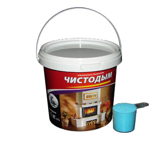
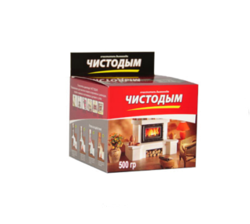
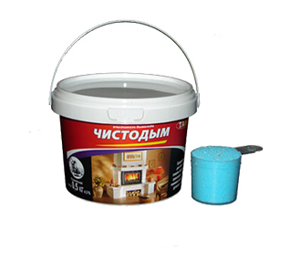
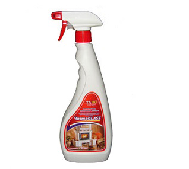
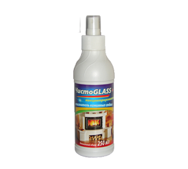
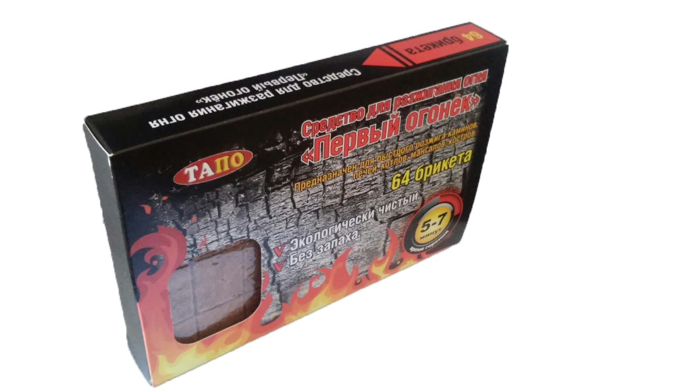
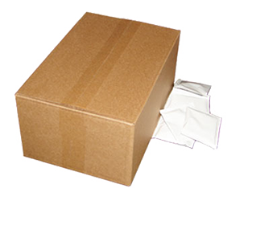

О нас
Первый производитель средств для чистки каминов и печей на рынке Республики Беларусь. Многолетный опыт работы в данной области позволил нам отметить и учесть все требования, предъявляемые покупателями к производимой нами продукции. Это позволело добиться высоких показателей качества, безопасности и эффективности наших товаров.
Мы производим
Очиститель дымохода «Чистодым» 1 кг. - порошок, который предназначен для очистки и защиты современных дымоходов, печей и каминов, отапливаемых дровами и углём. Под действием жара данный препарат выделяет специальные компаненты, которые поднимаются вверх по дымоходу при помощи тяги, вступают в реакцию с сажей и постепенно разрушают её, очищая стенки дымохода, а также покрывают их защитным слоем, который препятствует новому сажеобразованию. Средство имеет удобную фасовку в виде небольшого ведёрка с мерным ковшиком в комплекте, что позволяет правильно дозировать его. Одного килограмма средства хватает на 20 применений, чего вполне достаточно для полного курса очистки и профилактики загрязнений дымохода.
ПодробнееОчиститель дымохода «Чистодым» 1 кг.
Очиститель дымохода «Чистодым» 500 грамм в пакетиках - пакетированный порошок, который предназначен для очистки и защиты современных дымоходов, печей и каминов, отапливаемых дровами и углём. Под действием жара данный препарат выделяет специальные компаненты, которые поднимаются вверх по дымоходу при помощи тяги, вступают в реакцию с сажей и постепенно разрушают её, очищая стенки дымохода, а также покрывают их защитным слоем, который препятствует новому сажеобразованию. Чистодым имеет удобную упаковку, внутри которой находятся 10 расфасованных пакетиков по 50 грамм каждый, что делает использование весьма удобным. 500 грамм средства хватает на 10 применений, чего вполне достаточно для курса очистки одного прибора.
ПодробнееОчиститель дымохода «Чистодым» 500 грамм (в пакетиках)
Очиститель дымохода «Чистодым» 0.5 кг. - порошок, который предназначен для очистки и защиты современных дымоходов, печей и каминов, отапливаемых дровами и углём. Под действием жара данный препарат выделяет специальные компаненты, которые поднимаются вверх по дымоходу при помощи тяги, вступают в реакцию с сажей и постепенно разрушают её, очищая стенки дымохода, а также покрывают их защитным слоем, который препятствует новому сажеобразованию. Средство имеет удобную фасовку в виде небольшого ведёрка с мерным ковшиком в комплекте, что позволяет правильно дозировать его. Одного килограмма средства хватает на 20 применений, чего вполне достаточно для полного курса очистки и профилактики загрязнений дымохода.
ПодробнееОчиститель дымохода «Чистодым» 0,5 кг.
ЧистоGLASS – специальное чистящее средство, предназначенное для устранения нагара, сажи и других загрязнений со стеклянных дверок каминов и печей. При его изготовлении применяется сырьё высокой степени качества и химической очистки, что позволяет без труда очистить даже самый сильный нагар.
ПодробнееОчиститель каминных стёкол «ЧистоGLASS» 700 мл.
ЧистоGLASS – специальное чистящее средство, предназначенное для устранения нагара, сажи и других загрязнений со стеклянных дверок каминов и печей. При его изготовлении применяется сырьё высокой степени качества и химической очистки, что позволяет без труда очистить даже самый сильный нагар.
ПодробнееОчиститель каминных стёкол «ЧистоGLASS плюс» 250 мл.
Каждый помнит, сколько времени и терпения требуется, чтобы развести огонь. Кипа газет, щепки и немало стараний понадобится нам, пока в очаге наконец разгорится твердое топливо (дрова, древесный уголь, каменный уголь, брикеты, торф). Легко и быстро загорающиеся сильным пламенем и горящие в течение 5-7 минут средство для розжига «разжигетель огня Первый огонек 32 брикета» позволит без лишних усилий разжечь огонь в камине, печке, гриле, костре и любом другом месте.
ПодробнееРазжигатель огня «Первый огонёк» 32 брикета

Каждый помнит, сколько времени и терпения требуется, чтобы развести огонь. Кипа газет, щепки и немало стараний понадобится нам, пока в очаге наконец разгорится твердое топливо (дрова, древесный уголь, каменный уголь, брикеты, торф). Легко и быстро загорающиеся сильным пламенем и горящие в течение 5-7 минут средство для розжига «разжигетель огня Первый огонек 64 брикета» позволит без лишних усилий разжечь огонь в камине, печке, гриле, костре и любом другом месте.
ПодробнееРазжигатель огня «Первый огонёк» 64 брикета
Очиститель дымохода «Чистодым» в пакетиках - пакетированный порошок, который предназначен для очистки и защиты современных дымоходов, печей и каминов, отапливаемых дровами и углём. Мы предлагаем нашим партнёрам Чистодым в пакетиках оптом (130 пакетиков по 50 грамм в одном ящике) инструкция по применению прилагается.
ПодробнееОчиститель дымохода в пакетиках (Опт)
Дачная свежесть освежитель дачного или деревенского туалета, предназначен для устранения неприятного запаха в дачных туалетах, а так же наполняет туалет свежим ароматом.
ПодробнееДачная свежесть

Очиститель дымохода «Чистодым» 1 кг. - порошок, который предназначен для очистки и защиты современных дымоходов, печей и каминов, отапливаемых дровами и углём. Под действием жара данный препарат выделяет специальные компаненты, которые поднимаются вверх по дымоходу при помощи тяги, вступают в реакцию с сажей и постепенно разрушают её, очищая стенки дымохода, а также покрывают их защитным слоем, который препятствует новому сажеобразованию. Средство имеет удобную фасовку в виде небольшого ведёрка с мерным ковшиком в комплекте, что позволяет правильно дозировать его. Одного килограмма средства хватает на 20 применений, чего вполне достаточно для полного курса очистки и профилактики загрязнений дымохода.
ПодробнееОчиститель дымоходов "Чистодым"
Очиститель дымохода «Чистодым» 500 грамм в пакетиках - пакетированный порошок, который предназначен для очистки и защиты современных дымоходов, печей и каминов, отапливаемых дровами и углём. Под действием жара данный препарат выделяет специальные компаненты, которые поднимаются вверх по дымоходу при помощи тяги, вступают в реакцию с сажей и постепенно разрушают её, очищая стенки дымохода, а также покрывают их защитным слоем, который препятствует новому сажеобразованию. Чистодым имеет удобную упаковку, внутри которой находятся 10 расфасованных пакетиков по 50 грамм каждый, что делает использование весьма удобным. 500 грамм средства хватает на 10 применений, чего вполне достаточно для курса очистки одного прибора.
ПодробнееОчиститель дымоходов "Чистодым"
Очиститель дымохода «Чистодым» 0.5 кг. - порошок, который предназначен для очистки и защиты современных дымоходов, печей и каминов, отапливаемых дровами и углём. Под действием жара данный препарат выделяет специальные компаненты, которые поднимаются вверх по дымоходу при помощи тяги, вступают в реакцию с сажей и постепенно разрушают её, очищая стенки дымохода, а также покрывают их защитным слоем, который препятствует новому сажеобразованию. Средство имеет удобную фасовку в виде небольшого ведёрка с мерным ковшиком в комплекте, что позволяет правильно дозировать его. Одного килограмма средства хватает на 20 применений, чего вполне достаточно для полного курса очистки и профилактики загрязнений дымохода.
ПодробнееОчиститель дымоходов "Чистодым"
ЧистоGLASS – специальное чистящее средство, предназначенное для устранения нагара, сажи и других загрязнений со стеклянных дверок каминов и печей. При его изготовлении применяется сырьё высокой степени качества и химической очистки, что позволяет без труда очистить даже самый сильный нагар.
ПодробнееОчиститель каминных стекол "ЧистоGlass"
ЧистоGLASS плюс – специальное чистящее средство имеющее высокую концентрацию химических компонентов, предназначенное для устранения сложных загрязнений со стеклянных дверок каминов и печей. При его изготовлении применяется сырьё высокой степени качества и химической очистки, что позволяет без труда очистить даже самый сильный нагар.
ПодробнееОчиститель камминых стекол "ЧистоGlass плюс"
Каждый помнит, сколько времени и терпения требуется, чтобы развести огонь. Кипа газет, щепки и немало стараний понадобится нам, пока в очаге наконец разгорится твердое топливо (дрова, древесный уголь, каменный уголь, брикеты, торф). Легко и быстро загорающиеся сильным пламенем и горящие в течение течение 5-7 минут средство для розжига «разжигетель огня Первый огонек 32 брикета» позволит без лишних усилий разжечь огонь в камине, печке, гриле, костре и любом другом месте.
ПодробнееРазжигатель огня "Первый огонек"
Дачная свежесть освежитель дачного или деревенского туалета, предназначен для устранения неприятного запаха в дачных туалетах, а так же наполняет туалет свежим ароматом.
ПодробнееОчиститель каминных стекол "ЧистоGlass"
Очиститель дымохода «Чистодым» в пакетиках - пакетированный порошок, который предназначен для очистки и защиты современных дымоходов, печей и каминов, отапливаемых дровами и углём. Мы предлагаем нашим партнёрам Чистодым в пакетиках оптом (130 пакетиков по 50 грамм в одном ящике) инструкция по применению прилагается.
ПодробнееОчиститель дымохода в пакетиках (Опт)
Как это работает
В процессе горения древесины в дымоходе со временем образуются опасные наросты сажи, смолы и креозота. И во избежание их воспламенения рекомендуется чистить дымоход 1-2 раза в отопительный сезон. Профилактическое использование очистителя дымохода «Чистодым» позволит удалить нежелательную сажу и воспрепятствует образованию нежелательных наростов в будущем.

Детали отопительного прибора и дымоход покрываются смолистыми отложениями.

Очиститель дымохода покрывает слой опасного налета активными веществами.

Под воздействием активных веществ смола высыхает, становится хрупкой и устраняется.

Очищающий эффект средства продолжается несколько дней.
Стекло камина покрыто нагаром
Во время сгорания деревянные дрова или уголь выделяют сажу и креозот – вредные вещества, часть которых оседает на внутренней стороне стекла камина или печки. C нагаром поможет справится очиститель каминных стекол "ЧистоGlass".
Для оптовых закупок
Мы предлагаем нашим партнёром выгодные условия сотрудничества и открыты для любых предложений, способствующих развитию и общей выгоды. Нашим партнёрам мы предоставляем следующий перечень услуг:
- – Оперативность выполнения заявок
- – Нарастающая система скидок
- – Исполнение продукции под фирменным брендом заказчика
- – Бесплатная доставка по Беларуси, России, Украине
- – Бесплатная консультация наших специалистов
Внимание! Мы ищем надёжных партнёров в вашем регионе и готовы обсуждать любые условия для общей выгоды и развития. Звоните нам!
Контакты
ИП Потапов Роман Александрович
Производство чистящих средств для каминов и печей.
Республика Беларусь г. Минск, пр-т Машерова 11.
Контактные телефоны:
- +375 29 165-05-60 (velcom/viber)
- +375 29 660-18-57 (velcom/viber)
- +375 17 237-73-60 (тел./факс)
E-mail:
tapo-2014@mail.ru